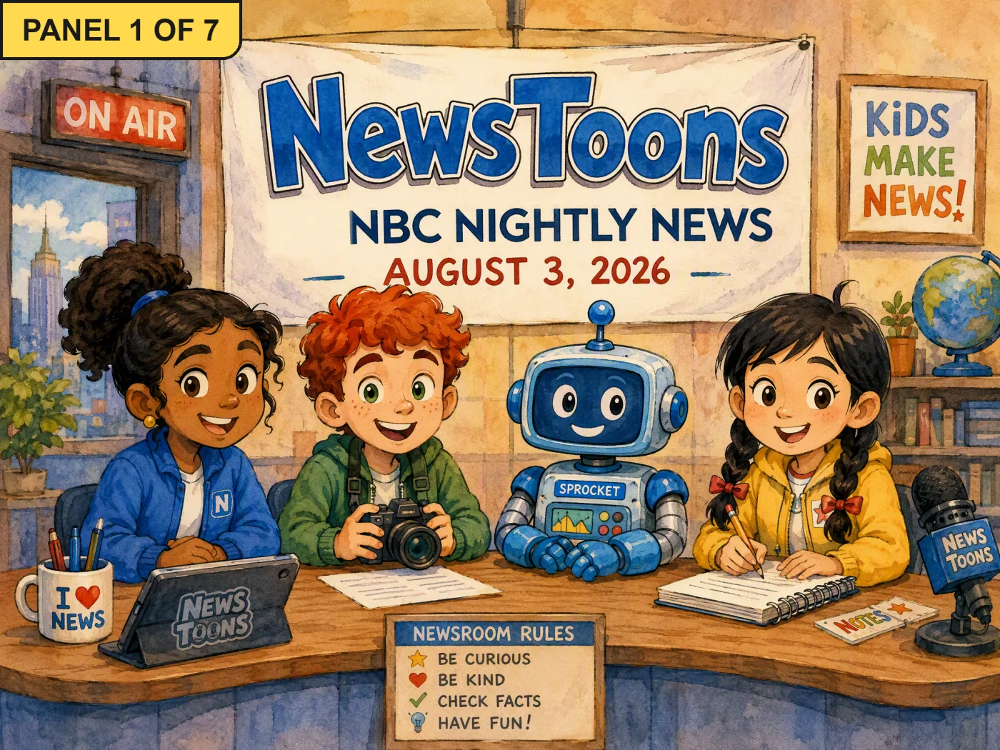
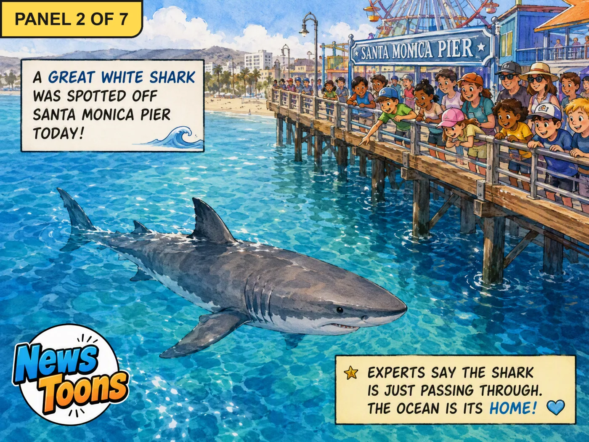
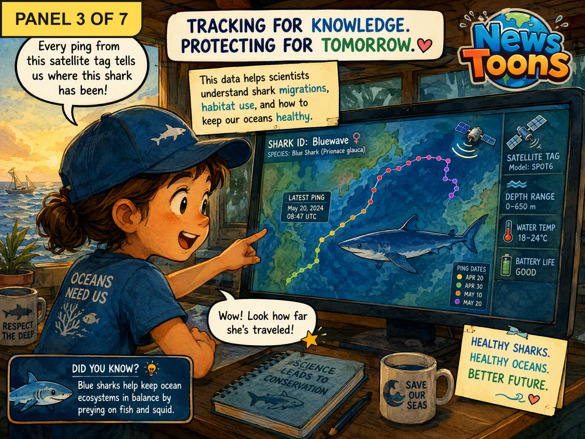
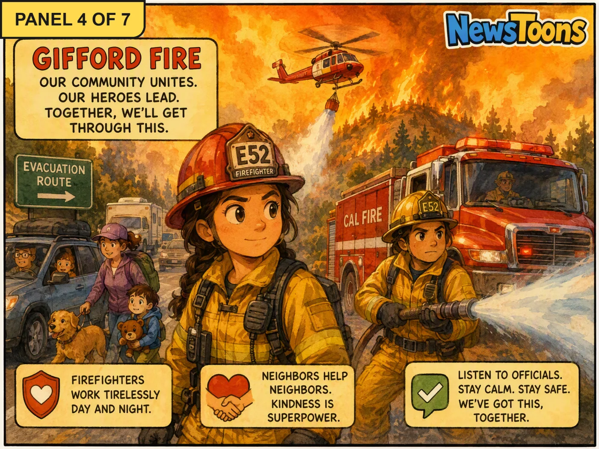
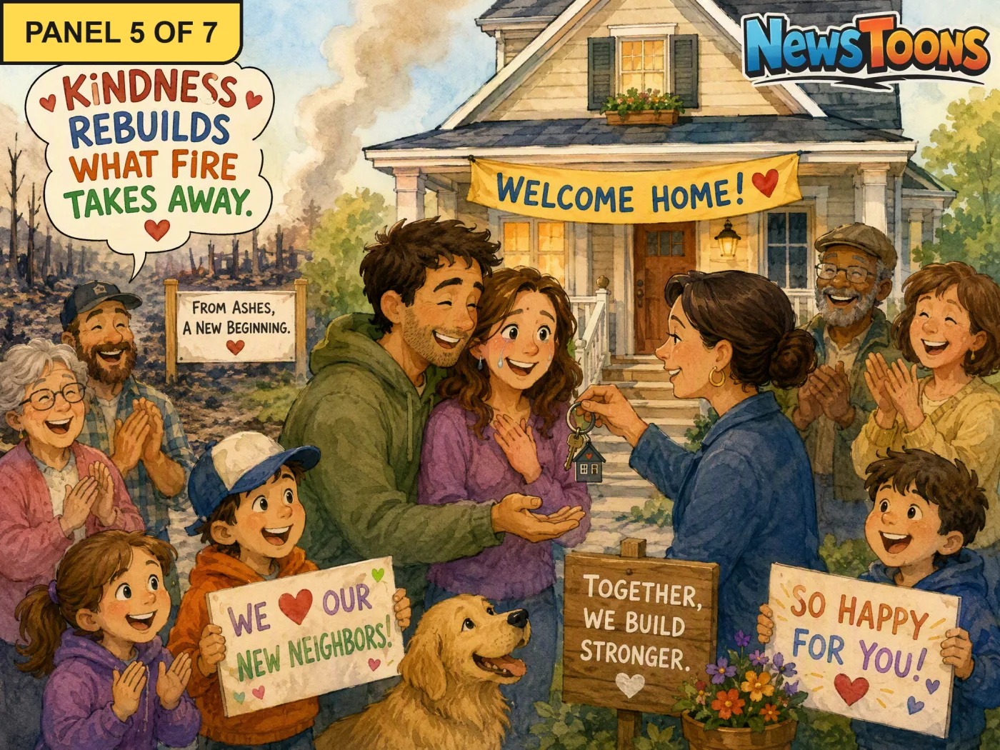
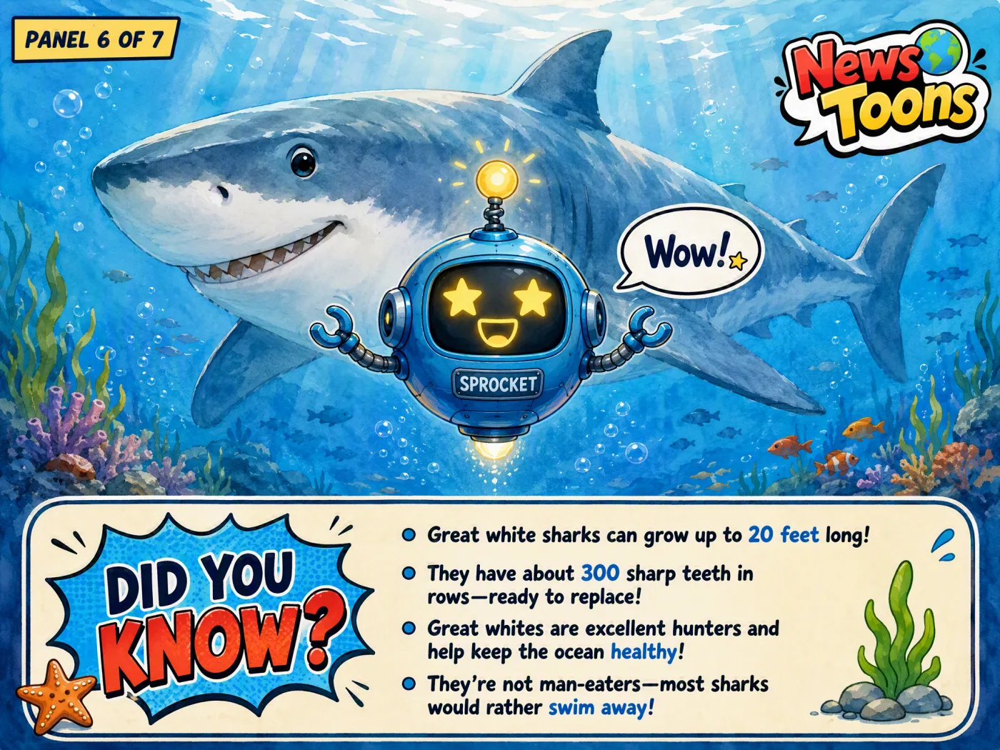
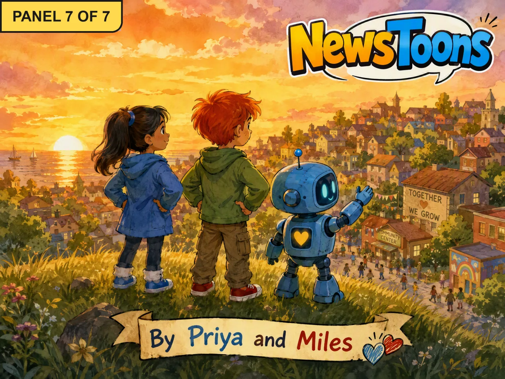

Episode 8: A Shark, Fires & A Community's Gift
Great white shark sighting at Santa Monica PierWildfires in Western statesCommunity gift / flooding response







Today's news, tomorrow's adventure ✏️✨
For kids of all ages
Great white shark sighting at Santa Monica PierWildfires in Western statesCommunity gift / flooding response






